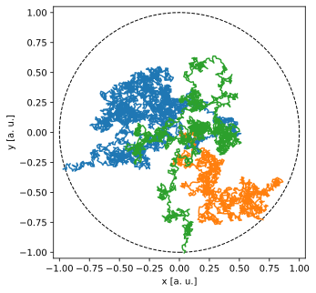

def is_even(value):
if value % 2 == 0:
return True
else:
return False
print(is_even(22))
print(is_even(33))True
FalseRiflettiamo un attimo sulle frasi seguenti, prese dal mio libro di cucina preferito:
Cosa c’entra tutto questo con la programmazione? Beh, per cominciare queste semplici frasi ci dicono che una ricetta non è necessariamente una semplice sequenza di istruzioni da eseguire una dopo l’altra. Ci sono casi in cui il da farsi dipende dal verificarsi o meno di una condizione. E altri in cui la nozione di ripetere un’operazione (per un certo numero di volte, o fino a che non succeda qualcosa) è utile. E siccome abbiamo detto che una ricetta è la nostra analogia archetipica per un programma, una cosa simile varrà anche in quest’ultimo caso.
Spoiler alert: è proprio così. Prendete nota delle espressioni se (nel senso condizionale, senza l’accento acuto), per \(n\) volte e fino a che, perché ogni linguaggio di programmazione che si rispetti fornisce parole chiave per esprimere esattamente questi costrutti. Python non fa eccezione.
Come potremmo scrivere una piccola funzione per capire se un numero intero è pari o dispari? Si tratta del classico problema che è facile a dirsi, ma a una seconda occhiata non è immediatamente ovvio da matematizzare.
Cosa vuol dire che un numero è pari? Facile: è divisibile per \(2\). Ovverosia: il resto della divisione intera (ovvero il modulo) per \(2\) è zero. La fortuna ci viene in aiuto, perché Python fornice, disponibile in stock, un operatore binario che fa esattamente il modulo—si scrive %. Allora guardate un attimo:
def is_even(value):
if value % 2 == 0:
return True
else:
return False
print(is_even(22))
print(is_even(33))True
FalseCongratulazioni: avete appena scritto il vostro primo programma con un’espressione condizionale. L’esempio è più o meno auto-esplicativo e non ha bisogno di particolari commenti, se non il fatto che, come nella definizione delle funzioni, l’indentazione qui ha carattere strutturate perché delimita l’estensione della logica incluse nelle due clausole if ed else.
Andando avanti imparerete che, in casi come questi, in cui una clausola condizionale termina con un return, l’else non è strettamente necessario. La forma più compatta
def is_even(value):
if value % 2 == 0:
return True
return False
print(is_even(22))
print(is_even(33))True
Falseè esattamente equivalente. (E, in generale, preferita). Ma per cominciare cerchiamo di mettere enfasi sulla chiarezza e sulla logica.
Narra le leggenda che un’università non meglio precisata usi dividere in gruppi le matricole secondo l’arcano criterio:
Possiamo tradurre tutto questo in Python e scrivere una semplice funzione che restituisca il gruppo, dato il numero di matricola? Senza dubbio—e il segreto è di nuovo il modulo che abbiamo visto all’inizio di questa sezione.
def group(identifier):
mod = identifier % 4
if mod == 0:
return "A1"
elif mod == 1:
return "B1"
elif mod == 2:
return "A2"
else:
return "B2"
print(group(194729))B1Mi raccomando: non avete più scuse per presentarvi nel gruppo sbagliato il primo giorno di laboratorio.
E, siccome c’è sempre un modo più compatto ed intelligente di fare le cose, il frammento che segue è esattamente equivalente
def group(identifier):
return ("A1", "B1", "A2", "B2")[identifier % 4]
print(group(194729))B1Siete capaci di spiegare esattamente perché la cosa funziona?
Provando e riprovando è il motto della Società Italiana di Fisica; e non a caso. Ripetere, o iterare, un’operazione è letteralmente una delle componenti fondamentali del metodo scientifico.
Supponiamo per un attimo che una persona vi chieda di sommare i primi \(1000\) numeri interi positivi. Potete aiutarvi con un calcolatore, e siete incoraggiate ad utilizzare tutte le cose che abbiamo imparato fino a questo momento. Facile, no?
s = 0 + 1 + 2 + 3 + 4 + 5 + 6 + 7 + 8 + 9 + 10 + 11 + 12 + 13 + 14 + 15 + 16 + \
17 + 18 + 19 + 20 + 21 + 22 + 23 + 24 + 25 + 26 + 27 + 28 + 29 + 30 + 31 + 32 + \
33 + 34 + 35 + 36 + 37 + 38 + 39 + 40 + 41 + 42 + 43 + 44 + 45 + 46 + 47 + 48 + \
49 + 50 + 51 + 52 + 53 + 54 + 55 + 56 + 57 + 58 + 59 + 60 + 61 + 62 + 63 + 64 + \
65 + 66 + 67 + 68 + 69 + 70 + 71 + 72 + 73 + 74 + 75 + 76 + 77 + 78 + 79 + 80 + \
81 + 82 + 83 + 84 + 85 + 86 + 87 + 88 + 89 + 90 + 91 + 92 + 93 + 94 + 95 + 96 + \
97 + 98 + 99 + 100 + 101 + 102 + 103 + 104 + 105 + 106 + 107 + 108 + 109 + 110 + \
111 + 112 + 113 + 114 + 115 + 116 + 117 + 118 + 119 + 120 + 121 + 122 + 123 + \
124 + 125 + 126 + 127 + 128 + 129 + 130 + 131 + 132 + 133 + 134 + 135 + 136 + \
137 + 138 + 139 + 140 + 141 + 142 + 143 + 144 + 145 + 146 + 147 + 148 + 149 + \
150 + 151 + 152 + 153 + 154 + 155 + 156 + 157 + 158 + 159 + 160 + 161 + 162 + \
163 + 164 + 165 + 166 + 167 + 168 + 169 + 170 + 171 + 172 + 173 + 174 + 175 + \
176 + 177 + 178 + 179 + 180 + 181 + 182 + 183 + 184 + 185 + 186 + 187 + 188 + \
189 + 190 + 191 + 192 + 193 + 194 + 195 + 196 + 197 + 198 + 199 + 200 + 201 + \
202 + 203 + 204 + 205 + 206 + 207 + 208 + 209 + 210 + 211 + 212 + 213 + 214 + \
215 + 216 + 217 + 218 + 219 + 220 + 221 + 222 + 223 + 224 + 225 + 226 + 227 + \
228 + 229 + 230 + 231 + 232 + 233 + 234 + 235 + 236 + 237 + 238 + 239 + 240 + \
241 + 242 + 243 + 244 + 245 + 246 + 247 + 248 + 249 + 250 + 251 + 252 + 253 + \
254 + 255 + 256 + 257 + 258 + 259 + 260 + 261 + 262 + 263 + 264 + 265 + 266 + \
267 + 268 + 269 + 270 + 271 + 272 + 273 + 274 + 275 + 276 + 277 + 278 + 279 + \
280 + 281 + 282 + 283 + 284 + 285 + 286 + 287 + 288 + 289 + 290 + 291 + 292 + \
293 + 294 + 295 + 296 + 297 + 298 + 299 + 300 + 301 + 302 + 303 + 304 + 305 + \
306 + 307 + 308 + 309 + 310 + 311 + 312 + 313 + 314 + 315 + 316 + 317 + 318 + \
319 + 320 + 321 + 322 + 323 + 324 + 325 + 326 + 327 + 328 + 329 + 330 + 331 + \
332 + 333 + 334 + 335 + 336 + 337 + 338 + 339 + 340 + 341 + 342 + 343 + 344 + \
345 + 346 + 347 + 348 + 349 + 350 + 351 + 352 + 353 + 354 + 355 + 356 + 357 + \
358 + 359 + 360 + 361 + 362 + 363 + 364 + 365 + 366 + 367 + 368 + 369 + 370 + \
371 + 372 + 373 + 374 + 375 + 376 + 377 + 378 + 379 + 380 + 381 + 382 + 383 + \
384 + 385 + 386 + 387 + 388 + 389 + 390 + 391 + 392 + 393 + 394 + 395 + 396 + \
397 + 398 + 399 + 400 + 401 + 402 + 403 + 404 + 405 + 406 + 407 + 408 + 409 + \
410 + 411 + 412 + 413 + 414 + 415 + 416 + 417 + 418 + 419 + 420 + 421 + 422 + \
423 + 424 + 425 + 426 + 427 + 428 + 429 + 430 + 431 + 432 + 433 + 434 + 435 + \
436 + 437 + 438 + 439 + 440 + 441 + 442 + 443 + 444 + 445 + 446 + 447 + 448 + \
449 + 450 + 451 + 452 + 453 + 454 + 455 + 456 + 457 + 458 + 459 + 460 + 461 + \
462 + 463 + 464 + 465 + 466 + 467 + 468 + 469 + 470 + 471 + 472 + 473 + 474 + \
475 + 476 + 477 + 478 + 479 + 480 + 481 + 482 + 483 + 484 + 485 + 486 + 487 + \
488 + 489 + 490 + 491 + 492 + 493 + 494 + 495 + 496 + 497 + 498 + 499 + 500 + \
501 + 502 + 503 + 504 + 505 + 506 + 507 + 508 + 509 + 510 + 511 + 512 + 513 + \
514 + 515 + 516 + 517 + 518 + 519 + 520 + 521 + 522 + 523 + 524 + 525 + 526 + \
527 + 528 + 529 + 530 + 531 + 532 + 533 + 534 + 535 + 536 + 537 + 538 + 539 + \
540 + 541 + 542 + 543 + 544 + 545 + 546 + 547 + 548 + 549 + 550 + 551 + 552 + \
553 + 554 + 555 + 556 + 557 + 558 + 559 + 560 + 561 + 562 + 563 + 564 + 565 + \
566 + 567 + 568 + 569 + 570 + 571 + 572 + 573 + 574 + 575 + 576 + 577 + 578 + \
579 + 580 + 581 + 582 + 583 + 584 + 585 + 586 + 587 + 588 + 589 + 590 + 591 + \
592 + 593 + 594 + 595 + 596 + 597 + 598 + 599 + 600 + 601 + 602 + 603 + 604 + \
605 + 606 + 607 + 608 + 609 + 610 + 611 + 612 + 613 + 614 + 615 + 616 + 617 + \
618 + 619 + 620 + 621 + 622 + 623 + 624 + 625 + 626 + 627 + 628 + 629 + 630 + \
631 + 632 + 633 + 634 + 635 + 636 + 637 + 638 + 639 + 640 + 641 + 642 + 643 + \
644 + 645 + 646 + 647 + 648 + 649 + 650 + 651 + 652 + 653 + 654 + 655 + 656 + \
657 + 658 + 659 + 660 + 661 + 662 + 663 + 664 + 665 + 666 + 667 + 668 + 669 + \
670 + 671 + 672 + 673 + 674 + 675 + 676 + 677 + 678 + 679 + 680 + 681 + 682 + \
683 + 684 + 685 + 686 + 687 + 688 + 689 + 690 + 691 + 692 + 693 + 694 + 695 + \
696 + 697 + 698 + 699 + 700 + 701 + 702 + 703 + 704 + 705 + 706 + 707 + 708 + \
709 + 710 + 711 + 712 + 713 + 714 + 715 + 716 + 717 + 718 + 719 + 720 + 721 + \
722 + 723 + 724 + 725 + 726 + 727 + 728 + 729 + 730 + 731 + 732 + 733 + 734 + \
735 + 736 + 737 + 738 + 739 + 740 + 741 + 742 + 743 + 744 + 745 + 746 + 747 + \
748 + 749 + 750 + 751 + 752 + 753 + 754 + 755 + 756 + 757 + 758 + 759 + 760 + \
761 + 762 + 763 + 764 + 765 + 766 + 767 + 768 + 769 + 770 + 771 + 772 + 773 + \
774 + 775 + 776 + 777 + 778 + 779 + 780 + 781 + 782 + 783 + 784 + 785 + 786 + \
787 + 788 + 789 + 790 + 791 + 792 + 793 + 794 + 795 + 796 + 797 + 798 + 799 + \
800 + 801 + 802 + 803 + 804 + 805 + 806 + 807 + 808 + 809 + 810 + 811 + 812 + \
813 + 814 + 815 + 816 + 817 + 818 + 819 + 820 + 821 + 822 + 823 + 824 + 825 + \
826 + 827 + 828 + 829 + 830 + 831 + 832 + 833 + 834 + 835 + 836 + 837 + 838 + \
839 + 840 + 841 + 842 + 843 + 844 + 845 + 846 + 847 + 848 + 849 + 850 + 851 + \
852 + 853 + 854 + 855 + 856 + 857 + 858 + 859 + 860 + 861 + 862 + 863 + 864 + \
865 + 866 + 867 + 868 + 869 + 870 + 871 + 872 + 873 + 874 + 875 + 876 + 877 + \
878 + 879 + 880 + 881 + 882 + 883 + 884 + 885 + 886 + 887 + 888 + 889 + 890 + \
891 + 892 + 893 + 894 + 895 + 896 + 897 + 898 + 899 + 900 + 901 + 902 + 903 + \
904 + 905 + 906 + 907 + 908 + 909 + 910 + 911 + 912 + 913 + 914 + 915 + 916 + \
917 + 918 + 919 + 920 + 921 + 922 + 923 + 924 + 925 + 926 + 927 + 928 + 929 + \
930 + 931 + 932 + 933 + 934 + 935 + 936 + 937 + 938 + 939 + 940 + 941 + 942 + \
943 + 944 + 945 + 946 + 947 + 948 + 949 + 950 + 951 + 952 + 953 + 954 + 955 + \
956 + 957 + 958 + 959 + 960 + 961 + 962 + 963 + 964 + 965 + 966 + 967 + 968 + \
969 + 970 + 971 + 972 + 973 + 974 + 975 + 976 + 977 + 978 + 979 + 980 + 981 + \
982 + 983 + 984 + 985 + 986 + 987 + 988 + 989 + 990 + 991 + 992 + 993 + 994 + \
995 + 996 + 997 + 998 + 999 + 1000
print(s)500500Cosa ne pensate? Non siete tentate di chiedervi se non ci sia una via più semplice? E, a una seconda occhiata, secondo voi come ho fatto a scrivere questo frammento di codice? A mano, pazientemente? O magari con qualche trucco? (Bonus track: il carattere \, o backslash, è quello che in Python permette di spezzare una riga troppo lunga ove necessario—nella sezione Sezione 9.2.2 impareremo un certo numero di altri usi di questo meraviglioso carattere.)
Nel caso conosceste un minimo di teoria dei numeri dal corso di analisi, o aveste un’intelligenza maggiore o uguale a quella del piccolo Gauss, vi metto subito il cuore in pace: potremmo fare
n = 1000
s = n * (n + 1) // 2
print(s)500500Ma non è questo il nocciolo della questione. Non tutto si risolve con una formuletta in forma chiusa, e spesso le situazioni in cui il calcolatore si rivela più utile sono quelle in cui serve usare la forza bruta. Mettiamo questo piccolo detour da parte e andiamo avanti.
forMa torniamo a noi. Se in questo momento state pensando “deve esserci un altro modo”, complimenti: siete persone di buon gusto e non volete programmare come barbari—il vostro istinto vi sta suggerendo la cosa giusta.
Non sarebbe bello se Python offrisse un costrutto esplicito per esprimere in modo formale quello che colloquialmente potremmo esprimere come: vorrei partire dal numero \(n = 1\) (o \(n = 0\), il che è indifferente) ed incrementare \(n\) di una unità per \(999\) (o \(1000\)) volte, sommando ogni volta il valore ottenuto alla somma parziale precedente? Lo so, detto così sembra più difficile di quanto non sia in realtà, ma il punto è che questo costrutto esiste e si chiama ciclo for.
s = 0
for i in range(1, 1001):
s += i
print(s)500500Wow! Il risultato è giusto, per cui dobbiamo aver fatto qualcosa di buono. Ma fermiamoci un attimo per cercare di convincerci di aver capito tutto nei minimi dettagli. Andiamo per ordine: l’esempio più semplice possibile di ciclo for è
for i in [1, 2, 3]:
print(i)1
2
3che è funzionalmente equivalente a
i = 1
print(i)
i = 2
print(i)
i = 3
print(i)1
2
3La sintassi generale
for variable in iterable:
do_something(variable)permette di scorrere tutti gli elementi di un oggetto iterabile (ad esempio una lista, una tupla o un array di numpy) e compiere una o più istruzioni all’interno delle quali la variabile su cui eseguiamo il ciclo assume il valore dell’elemento corrente dell’iterabile. Si tratta letteralmente di:
i);Altro semplice esempio per chiarire il concetto:
for name in ["Giulia", "Luca"]:
print(f"Hello, {name}!")Hello, Giulia!
Hello, Luca!(Notate che anche qui—ma ormai ci siete abituate—l’indentazione non è casuale.)
Torniamo al nostro esempio iniziale. range() è un built-in di Python che permette di iterare su una collezione di numeri interi—da un minimo ad un massimo, con un passo che di default è \(1\). La segnatura principale è
range(start, stop, step=1)in cui start è incluso e stop è escluso, ma accetta anche la versione abbreviata
range(stop)in cui si assume start = 0 e step = 1. Sperimentate cambiando i valori degli argomenti ed assicuratevi di capire cosa succede. Non dovreste essere sorprese di vedere che la nostra somma si può scrivere in modo equivalente come
s = 0
for i in range(1001):
s += i
print(s)500500(Vedete la differenza?)
L’unica cosa che rimane da capire è cosa dobbiamo pensare della variabile s che abbiamo inizializzato a \(0\) al di fuori del ciclo. Beh: se vogliamo fare una somma dobbiamo partire da qualcosa, e siccome lo \(0\) è l’elemento neutro della somma, quello è il valore naturale da cui partire.
Non vi lasciate confondere: nel nostro piccolo programma abbiamo due variabili (s ed i), e mai, nemmeno per un secondo, dovete far confusione tra le due:
i è semplicemente una variabile ausiliaria gestita dalla struttura del ciclo—possiamo utilizzarla ma dobbiamo resistere alla tentazione di modificarla (torniamo sulla questione tra un attimo);s è una variabile di nostra proprietà: la inizializziamo a zero, per tutta la durata del ciclo rappresenta la somma parziale fino a quel momento, e quando usciamo dal loop rappresenta la somma totale, ovvero la risposta alla nostra domanda.Non abbiamo tempo di insistere troppo sulla questione, ma il modo migliore di convincersi che i va trattata con cura è probabilmente
for i in range(10):
print(i)
if i == 5:
i = 8Se pensate di utilizzare questa sorta di trucco per saltare il \(6\) ed il \(7\) nell’esecuzione del ciclo, rimarrete sorprese! (L’output del codice non è incluso volutamente: provate a pensare a cosa succede nella vostra testa prima di copiare ed incollare il frammento nel vostro editor di testo.)
Mentre più o meno tutti i linguaggi di programmazione offrono una qualche forma di ciclo for, la semantica del costrutto varia sostanzialmente da linguaggio a linguaggio. L’ultima cosa che abbiamo detto, ad esempio, vale in Python ma non in C o C++. (Strettamente parlando la cosa è irrilevante per i nostri scopi, ma se in futuro doveste diventare poliglotte, tenetelo a mente, perché la cosa vi tornerà utile.)
whileCi sono situazioni in cui non sappiamo a priori quante iterazioni vogliamo fare—pensate alla parola chiave fino a che con cui abbiamo aperto questo capitolo.
Proviamo, ad esempio, ad attaccare questo problema: quanti numeri interi positivi consecutivi posso sommare prima che il risultato superi il valore \(1000\)? Si tratta di una domanda cui sappiamo rispondere—il numero \(n\) è dato da \[ \left\lfloor \frac{n (n + 1)}{2} \right\rfloor = 1000 \] ovverosia dobbiamo prendere la parte intera della soluzione positiva della corrispondente equazione di secondo grado nella variabile reale \(x\) \[ x^2 + x - 2000 = 0 \quad \text{da cui}\quad x = \frac{-1 + \sqrt{8001}}{2} \approx \sqrt(2000) \approx 44.7 \] Possiamo verificare facilmente che abbiamo fatto la cosa giusta: \[ \sum_{i=1}^{44} i = \frac{44 \times 45}{2} = 990 \quad \text{e}\quad \sum_{i=1}^{45} i = \frac{45 \times 46}{2} = 1035. \] La risposta è \(44\). Ma, sulla base di quanto detto fino a questo momento non è ovvio come tradurre la cosa in termini di un ciclo for…
Ed è qui che Python ci viene in aiuto con un secondo costrutto per iterare: il ciclo while. Il ciclo while è una costrutto disegnato per interrompere l’iterazione quando una particolare condizione è soddisfatta—nel nostro caso:
s = 0
n = 0
while s + (n + 1) <= 1000:
n += 1
s += n
print(n)44Fate attenzione alla logica: qui s rappresenta la somma parziale, e n l’ultimo numero aggiunto. Il prossimo numero da aggiungere è n + 1 e, all’interno del loop, prima si incrementa n e poi si aggiunge n ad s. (A queste condizioni, n parte da \(0\) e all’uscita del loop, rappresenta il numero cercato.)
Se avete l’impressione che mettere insieme un ciclo while ben congegnato sia logicamente più delicato che fare un ciclo for, sono simpatetico con il sentimento. In questo caso, ad esempio, avremmo potuto prendere n come il prossimo numero da aggiungere, facendolo partire da \(1\) e incrementandolo dentro il ciclo while dopo (e non prima) averlo aggiunto ad s. Così facendo il valore all’uscita dal loop non è il numero cercato, ma il successivo
s = 0
n = 1
while s + n <= 1000:
s += n
n += 1
print(n - 1)44Il risultato è lo stesso.
Tipicamente è possibile trovare un ciclo while equivalente per un dato ciclo for, e viceversa (in questo secondo caso è tipicamente necessario interrompere esplicitamente il ciclo con il comando break). Tuttavia, come abbiamo visto, ci sono casi in cui è più naturale usare un for (quando sappiamo in anticipo quante iterazioni dobbiamo fare) e casi in cui è più naturale usare un while (quando il numero di iterazioni da fare non è noto a priori). Inutile a dirsi, dovreste cercare di essere proficienti in entrambi.
Adesso che siamo maestre del controllo del flusso, e sappiamo loopare ed eseguire istruzioni condizionali, cosa ci facciamo?
La prima tentazione ovvia è quella di dire: ogni volta che vedete il simbolo di sommatoria, lì avete spazio per tradurre il problema in un ciclo. E, da fisiche, di sommatorie ne vedete (e ne vedrete) comunemente. La media campione, ad esempio, è sostanzialmente una somma, e non c’è niente di male nel calcolarla con un loop.
def mean(sample):
m = 0
for value in sample:
m += value
m /= len(sample)
return m
sample = [1.2, 1.34, 2.1, 1.85, 1.44]
print(mean(sample))1.5859999999999999La varianza e la deviazione standard del campione sono pure somme, e allora potremmo andare avanti e vedere come implementarle sulla stessa linea.
Arrivati a questo punto, però, è probabilmente più istruttivo un invito a non reinventare la ruota ogni volta. Il pacchetto numpy fornisce tutte le funzioni statistiche di cui potreste mai aver bisogno, inclusa la media, la varianza e la deviazione standard. Nella vostra vita professionale la via maestra al calcolo delle proprietà di un campione sarà
import numpy as np
sample = [1.2, 1.34, 2.1, 1.85, 1.44]
print(np.mean(sample))1.5859999999999999Perché? Beh, per diversi motivi, tutti importanti:
numpy sono tipicamente molto meglio testate di quanto possa esserlo qualsiasi cosa prodotta semi-amatorialmente (senza offesa per nessuno);numpy ne è perfettamente al corrente;numpy sia significativamente più veloce di un loop grezzo in Python—ci torneremo nel Capitolo 13.Se a questo punto siete rimaste con la brutta sensazione che abbiamo speso un intero capitolo per imparare una cosa che nella vita non userete mai, voglio rassicuravi: if, for e while sono costrutti che chiunque si avvicini, anche casualmente, alla programmazione deve saper maneggiare.
Supponete per un attimo di dover risolver il seguente problema: si lancino 10 dadi a 6 facce; qual è la probabilità che la somma delle uscite sia esattamente di 26, almeno due uscite siano 6 e non ci siano 4? Si tratta di un problema che non ha nessuna difficoltà concettuale—dobbiamo semplicemente enumerare tutte le possibili combinazioni delle uscite e contare, tra queste, quante soddisfano alle condizioni. Il problema è che queste combinazioni sono \[ N = 6^5 = 7776 \] per cui l’esercizio, posto in questi termini, è più utile per ammazzare il tempo (ammesso che ne abbiate bisogno) più che per imparare qualcosa. Volete sapere una cosa bella? La cosa si può formalizzare in non più di 6 righe di Python, che coinvolgono, guarda caso, un if ed un for—il frammento di seguito calcola la risposta e stampa esplicitamente tutte le combinazioni accettate (sono rare, poco più di \(3\) su \(1000\)).
from itertools import product
n = 0
N = 0
for roll in product(range(1, 7), repeat=5):
N += 1
if sum(roll) == 26 and roll.count(6) >= 2 and 4 not in roll:
print(roll)
n += 1
print(f"P = {n}/{N} = {n / N:.5f}")(2, 6, 6, 6, 6)
(3, 5, 6, 6, 6)
(3, 6, 5, 6, 6)
(3, 6, 6, 5, 6)
(3, 6, 6, 6, 5)
(5, 3, 6, 6, 6)
(5, 6, 3, 6, 6)
(5, 6, 6, 3, 6)
(5, 6, 6, 6, 3)
(6, 2, 6, 6, 6)
(6, 3, 5, 6, 6)
(6, 3, 6, 5, 6)
(6, 3, 6, 6, 5)
(6, 5, 3, 6, 6)
(6, 5, 6, 3, 6)
(6, 5, 6, 6, 3)
(6, 6, 2, 6, 6)
(6, 6, 3, 5, 6)
(6, 6, 3, 6, 5)
(6, 6, 5, 3, 6)
(6, 6, 5, 6, 3)
(6, 6, 6, 2, 6)
(6, 6, 6, 3, 5)
(6, 6, 6, 5, 3)
(6, 6, 6, 6, 2)
P = 25/7776 = 0.00322Avrete notato che abbiamo gettato nel mix un po’ di Python appena più avanzato di quello cui siamo abituate. In particolare:
product del modulo itertools della libreria standard fornisce il prodotto cartesiano degli iterabili che passiamo come argomento, e ci evita si scrivere esplicitamente \(5\) loop annidiati (ma potete farlo per esercizio e verificare che il risultato sia lo stesso);sum fa esattamente quello che il nome suggerisce—ovvero, la somma dell’iterabile che passiamo come argomento;count della tupla restituisce il numero di occorrenze del valore che passiamo come argomento nella tupla stessa;in.Sperimentate con questo piccolo frammento prima di andare avanti—è istruttivo!
A onor del vero dobbiamo dire che questo problema era attaccabile direttamente con un minimo di intelligenza. Vogliamo almeno due \(6\), il che vuol dire che il problema è capire in quanti modi possiamo realizzare \(26 - 12 = 14\) senza avere un \(4\)—ce ne sono solo due, \((6, 6, 2)\) e \((6, 5, 3)\). Quindi, modulo permutazioni, abbiamo due combinazioni possibili
Quelle del primo tipo sono esattamente \(5\) (posso mettere il \(2\) dove voglio); quelle del secondo tipo posso contarle calcolando il numero di combinazioni di \(2\) elementi in un insieme di \(4\) elementi, per cui \[ n = 5 + \binom{5}{3} = 5 + 20 = 25 \] Ma capite bene che la prima soluzione—quella che usa la forze bruta—si generalizza senza sforzo a qualsiasi situazione (modulo il fatto che il problema scala esponenzialmente con il numero di dadi, per cui se volete provare con \(100\) potreste dovere aspettare un pochino…)
Concludiamo questa sezione con un piccolo problema con il quale avremo l’occasione di confrontarci direttamente durante l’anno—quello della simulazione di un semplice random walk in due dimensioni. Ci limitiamo al programma in Python senza farne l’esegesi—ormai siete grandi.
import numpy as np
from matplotlib import pyplot as plt
def random_walk(step=0.02, max_radius=1.):
x = [0.]
y = [0.]
while np.hypot(x[-1], y[-1]) <= max_radius:
phi = np.random.uniform(0., 2. * np.pi)
dx = step * np.cos(phi)
dy = step * np.sin(phi)
x.append(x[-1] + dx)
y.append(y[-1] + dy)
return x, y
for i in range(3):
x, y = random_walk()
plt.plot(x, y)
circle = plt.Circle((0, 0), 1, fill=False, ls="dashed")
plt.gca().add_patch(circle)
plt.axis([-1.05, 1.05, -1.05, 1.05])
plt.xlabel("x [a. u.]")
plt.ylabel("y [a. u.]")
plt.gca().set_aspect("equal")
Cogliamo anche l’occasione per anticipare che questa non è la fine della storia. Nel capitolo Capitolo 13 esploreremo brevemente un punto di vista (diverso ma equivalente) sul controllo del flusso che è utilissimo in molte applicazioni pratiche.